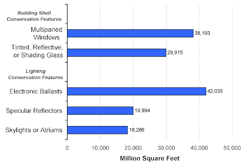
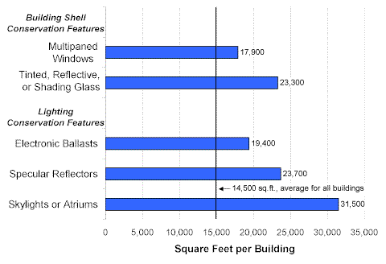

Building Shell and Lighting Conservation Features
The 1999 CBECS collected information on two types of building shell conservation—the use of multiplaned windows and the use of tinted, reflective, or shading glass. The former was used for 38,193 million square feet of floorspace and the latter for 29,915 million square feet (57 percent and 44 percent of total floorspace, respectively) (Figure 1).
Of the three lighting conservation features, electronic ballasts were used most often (for 42,035 million square feet, 62 percent of total floorspace). Specular reflectors and skylights or atriums were less widely used, each for less than 20,000 million square feet.
Figure 1. Building Shell and Lighting Conservation Features in Commercial Buildings, 1999 Energy Information Administration
Commercial Buildings Energy Consumption Survey
Commercial buildings with either building shell conservation features or lighting conservation features were larger commercial buildings than average (Figure 2). Those buildings with skylights or atriums were the largest, at 31,500 square feet per building.
Figure 2. Average Building Size by Type of Building Shell and Lighting Conservation Features, 1999 Energy Information Administration
Commercial Buildings Energy Consumption Survey
Return to:
“Conservation Features and Practices”
Specific questions may be directed to:
Alan Swenson
alan.swenson@eia.doe.gov
Release date: May 21, 2002
http://www.eia.gov/consumption/commercial/data/archive/cbecs/char99/con_bldg.html
If you are having any technical problems with this site, please contact the EIA webmaster at wmaster@eia.doe.gov.